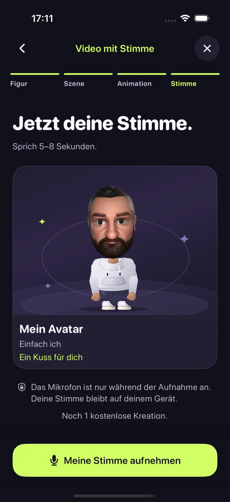
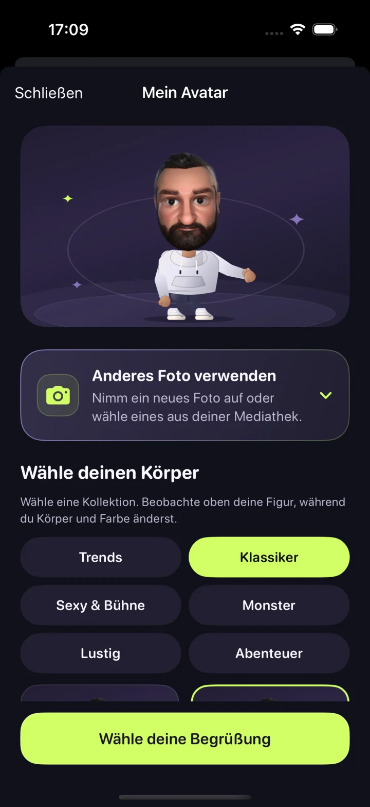
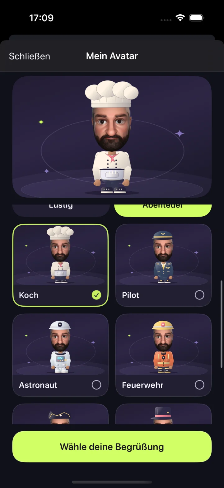
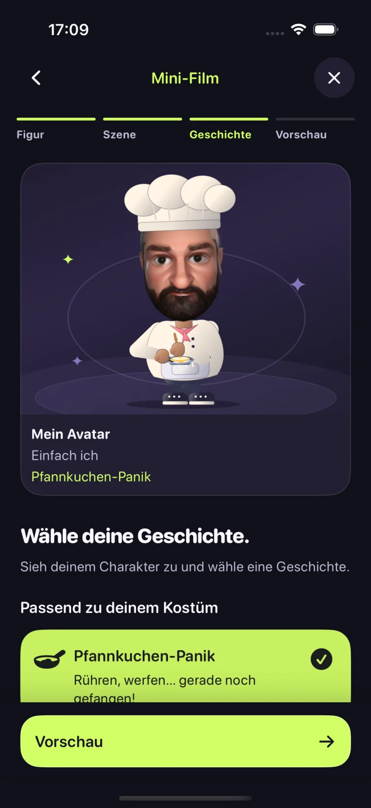
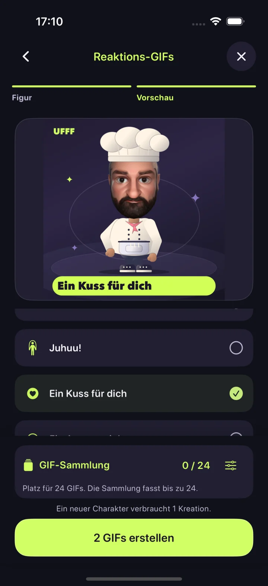
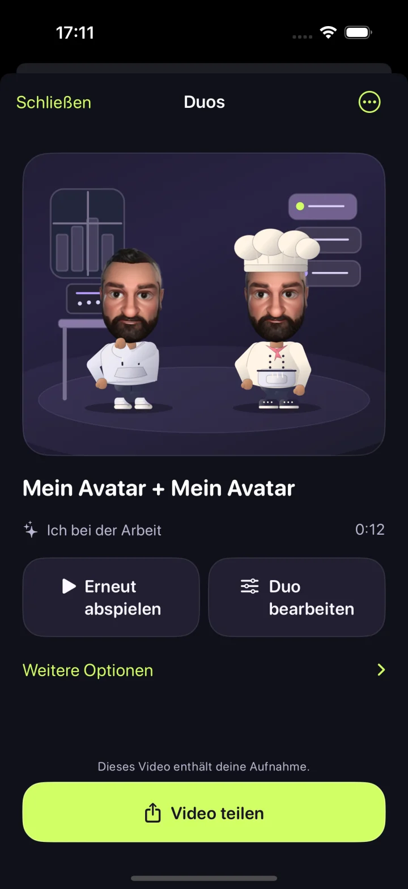

01
Sprachvideo
Ein kleiner Satz, viel Charakter. Nimm bis zu 8 Sekunden auf. Behalte deine Stimme oder probiere einen sanften höheren oder tieferen Effekt.
Figur → Szene → Bewegung → Stimme

Deine kleine Cartoon-Welt
Schlüpfe in eine neue Rolle. Koche, zaubere oder wirf einen Kuss zu. Erstelle kleine Geschichten und große Reaktionen mit deiner eigenen Figur.
Diese Seite zeigt das kommende Update 1.1.1. Im App Store ist derzeit Version 1.0 verfügbar.

Ein Gesicht. So viele Rollen.
Nimm ein Foto auf oder wähle eines aus. Probiere Körper, Farbe und Begrüßung mit einer Live-Vorschau aus. Speichere den Avatar für deinen Startbildschirm und wähle ihn für die nächste Geschichte wieder aus.
Echte App-Bildschirme. Das Ergebnis hängt vom Foto ab.

Drei Möglichkeiten
Wähle zuerst dein Format. Jeder Weg führt dich durch die Schritte, die du dafür brauchst.
Ein kleiner Satz, viel Charakter. Nimm bis zu 8 Sekunden auf. Behalte deine Stimme oder probiere einen sanften höheren oder tieferen Effekt.
Figur → Szene → Bewegung → Stimme

Dein Koch geht in die Küche, dein Zauberer zeigt einen Trick. Wähle Szene und Geschichte. Deine Stimme kommt auf Wunsch dazu.
Figur → Szene → Geschichte → Vorschau

Ein Hallo, ein Jubel, eine herrlich dramatische Reaktion. Wähle aus allen Animationen dein eigenes stummes GIF-Paket.
Figur → Bewegungen → GIF-Paket


Zusammen spielen
Bringe zwei gespeicherte Figuren auf demselben iPhone zusammen. Wähle die Szene, sieh dir die Vorschau an und entscheide, welche Stimmen zu hören sind. Eigene Bereiche in der Sammlung halten Einzelkreationen und Duos übersichtlich.
Ein Grund zum Feiern?
Lernt euch kennen.
Insgesamt sind drei erfolgreiche Kreationen über alle Formate hinweg kostenlos. Danach schaltet UFFF Forever mit einem einmaligen Kauf unbegrenzt neue Kreationen frei.
Fehlgeschlagene oder abgebrochene Vorgänge verbrauchen kein Guthaben. Apples Kaufdialog zeigt den aktuellen Preis in der Währung deiner App-Store-Region.
Käufe und kostenlose Kreationen ↗Fotos und Stimmen werden auf deinem Gerät verarbeitet. Kein Konto, keine Werbung, kein Cloud-KI-Dienst. Du entscheidest, was du teilst.
Mehr zum Datenschutz ↗